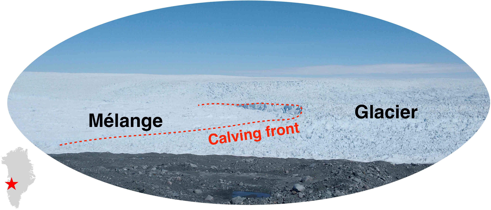
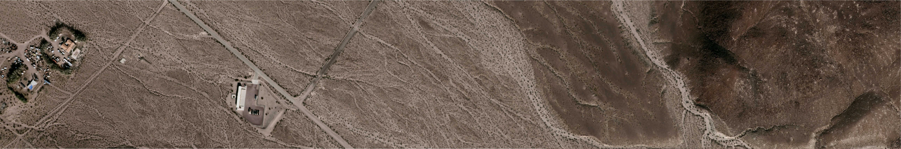
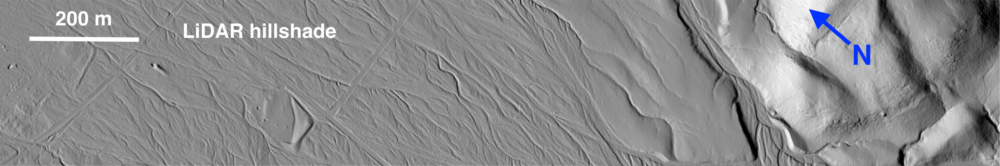
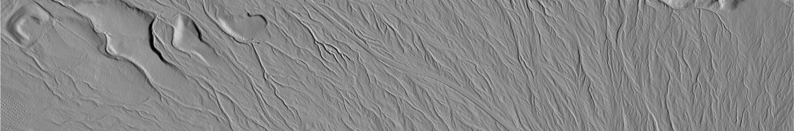
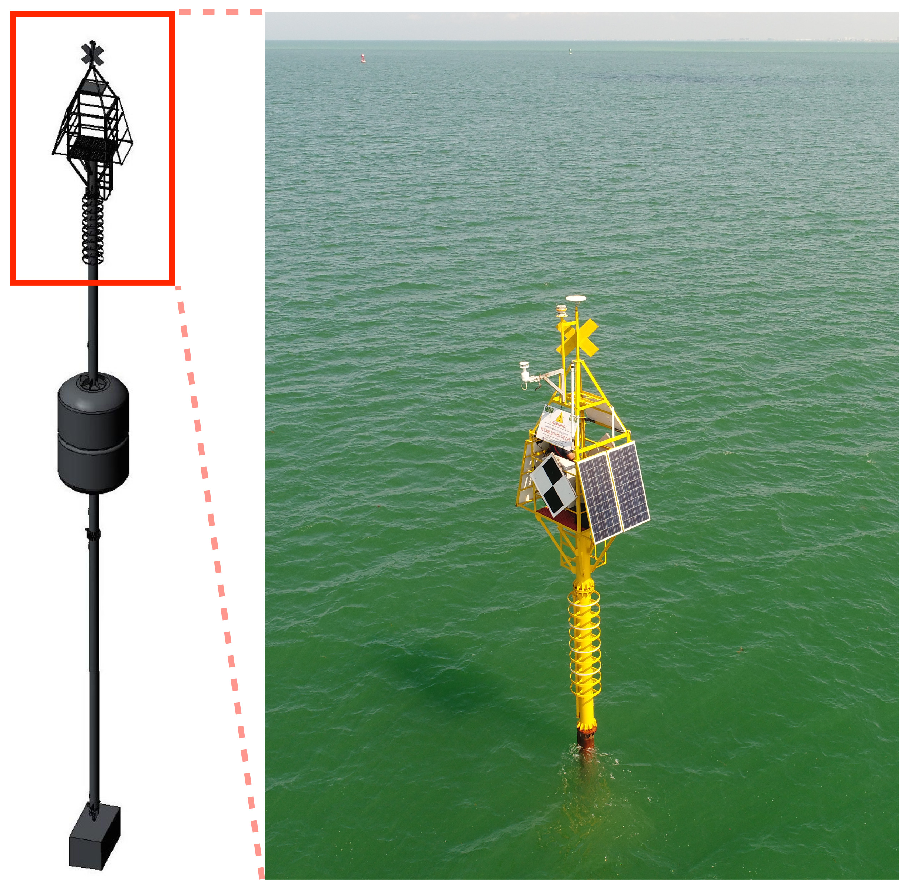

Ice discharge at or close to the glacier front is a major process contributing to recent ice loss in Greenland.
Marine-terminating glaciers are generally more variable than other glaciers.
We combine satellite imagery and terrestrial radar interferometry (TRI) to map and analyze speed and elevation changes of the glacier terminus.
The video on the right (credit: Denise Holland, New York University) shows a calving event at Jakobshavn Isbræ that produces icebergs.
Using high temporal resolution TRI data, we detected precursor motion (block rotation) several days before the actual calving event (Xie et al., 2016).
Based on tidal response analysis, we found grounding line migration during Jakobshavn Isbræ's recent calving seasons (Xie et al., 2018).
By applying an updated topography mapping approach, we found that pro-glacial mélange plays an important role (i.e., doorstop) in suppressing iceberg calving (Xie et al., 2019).
Accurate estimation of fault slip rate is fundamental to seismic hazard assessment.
Long-term fault slip rate is also an important parameter in modeling fault or shear zone evolution (Dixon & Xie, 2018).
Measured surface displacement and dated offset landforms can define average slip rate over thousand years or longer time scales.
We use high-resolution imagery and LiDAR DEM to restore displacements of offset alluvial fans along the Calico Fault in the Eastern California Shear Zone,
and terrestrial cosmogenic nuclides (TCN) and optically stimulated luminescence (OSL) dating techniques to estimate alluvial fan ages,
these data allow estimation of geologic slip rate for the fault (Xie et al., 2019).
Below is an alluvial fan offset by the Calico Fault near Newberry Springs, California (see location on GoogleMap). Aerial ortho-imagery was downloaded from the USGS EarthExplorer, LiDAR DEM was provided by the OpenTopography Facility.
Can you guess how much the displacement is? The scroll bar can help (tested browsers: Google Chrome, Firefox and Safari).



Slow slip events (SSEs) represent a distinct strain release process that occurs in many subduction zones.
We use continuous GNSS data collected in and near the Nicoya Peninsula, Costa Rica to study SSEs.
Based on multi-decade geodetic monitoring, we found (Xie et al., 2020):
1) SSEs occur at both the shallow (~10 km) and deep (~35 km) portions of the plate interface,
but the latter generally last longer, have larger magnitudes, and are more predictable compared to shallow SSEs;
2) There is minimum to no slow slip in the 2012 Mw 7.6 seismic rupture area, and a persistent slow slip patch beneath the Nicoya Gulf entrance;
and 3) SSE patterns and inter-SSE locking status on the megathrust are very similar before and after the 2012 Mw 7.6 earthquake.

Measuring seafloor motion in shallow coastal water is challenging due to strong and highly variable oceanographic effects.
Such measurements are potentially useful for monitoring near-shore coastal subsidence,
subsidence due to petroleum withdrawal, strain accumulation/release processes in subduction zones and submerged volcanoes,
and certain fresh water applications, such as volcano deformation in caldera-hosted lakes.
We have developed a seafloor geodesy system for this environment based on an anchored spar buoy topped by high precision GPS.
Orientation of the buoy is measured using a digital compass that provides heading, pitch, and roll information.
The combined orientation and GPS tracking data are used to recover the three-dimensional position of the seafloor marker (anchor).
A test system has been deployed in Tampa Bay, Florida, for over two years, and has weathered several major storms without incident.
Even in the presence of strong tidal currents which can deflect the buoy several meters from vertical,
daily repeatability in the corrected three-component seafloor positioning is 1-2 cm or better (Xie et al., 2019).
In addition to seafloor geodesy, the system can also be used for sea level measurements through GPS-interferometric reflectometry (Xie et al., 2021).
Working with Mark Zumberge at the Scripps Institution of Oceanography, we use wave glider based GNSS-acoustic ranging technique to measure seafloor motion in the Cascadia and other subduction zones.
Such measurements can help characterize and possibly predict magnitude, rupture area, and tsunami potential of future damaging earthquakes in the submerged subduction zones, which are often not well constrained by conventional geodetic techniques.
GNSS receivers record direct signals from satellites as well as reflected signals from local objects. The reflected signal can interfere with the direct signal, enhancing or reducing overall signal strength.
This characteristic can be used to measure the height difference between the GNSS antenna and the reflecting surface. The technique is called GNSS Interferometric Reflectometry (GNSS-IR).
We have developed a few GNSS-IR applications, including: 1) sea level measurements by a spar buoy (Xie et al., 2021);
2) high resolution sea ice freeboard measurements with coastal GNSS stations (Xie, 2022).